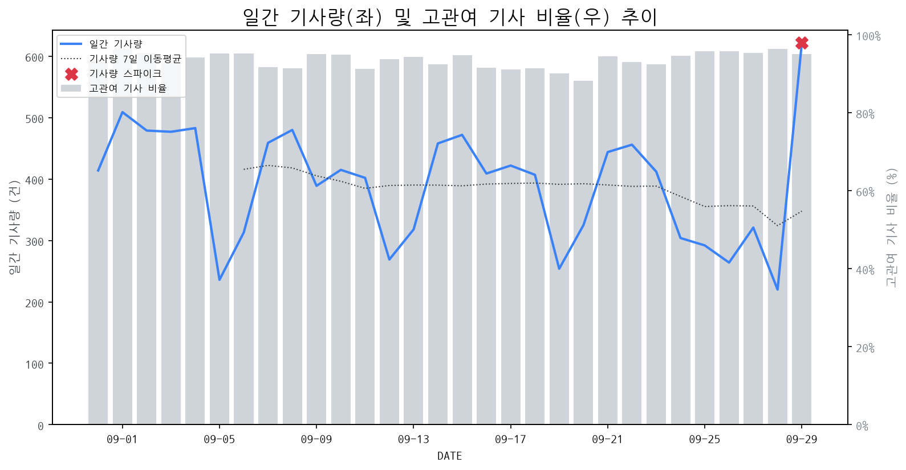

1
시장 활동 지표
기사량 추세 & 이상 징후 탐지
시장의 '전체 기사량'이 평소보다 비정상적으로 급증했는지(Spike)를 차트로 확인하고, LLM이 분석한 급등의 핵심 원인을 파악할 수 있음

고관여 기사란? 산업 연관 키워드로 수집된 기사들 중 디스플레이 키워드에 가중치를 반영하여 도출된 관련성 높은 기사
수집된 기사 수 (2026-09-29)
622
+36% WoW
기사량 변동 수준 (7일 이동평균 대비)
+2.0σ
스파이크 감지
전체 기사량에서 7일 평균 대비 2.0 표준편차 급등/급락(622건)
전체 기사량에서 7일 평균 대비 2.0 표준편차 급등/급락(622건)
- 시장 전반의 관심이 급증했습니다. 급등 원인이 된 주요 토픽과 이벤트를 상세 분석하세요.
2
오늘의 키워드
급격한 관심 ↑, 주목해야 할 키워드
1
레노버
+3.7σ
레노버의 가상화 솔루션 신제품 출시 및 특허 이슈가 동시 부각되며 관심 집중
Related Metrics
금일 언급량: 10, 전일 대비: +10
Interpretation
서버/IT 인프라 수요 증가
Next Step
핵심 토픽 'IT_OLED_Topic' 관련 신호입니다. 3번 섹션(키워드 감성분석)에서 해당 토픽의 감성 변동을 교차 확인하세요.
2
삼성전자
+2.9σ
AI TV 혁신과 압도적 무선 청소기 성능, 고객 만족도 25년 연속 1위가 동시 부각되었습니다.
Related Metrics
금일 언급량: 32, 전일 대비: +10
Interpretation
AI TV 기술력 강화 전망
Next Step
핵심 토픽 'Foldable_Display_Topic' 관련 신호입니다. 3번 섹션(키워드 감성분석)에서 해당 토픽의 감성 변동을 교차 확인하세요.
3
엔비디아
+2.5σ
엔비디아, AI 보안 강화 및 AI 지능 폭발 경고 속 기술적 통제 강조로 주목받음.
Related Metrics
금일 언급량: 13, 전일 대비: +9
Interpretation
AI 관련 투자 확대 기대
Next Step
'엔비디아' 관련 상세 기사 및 경쟁사 반응 모니터링
4
모니터
+2.5σ
초고주사율 게이밍 모니터 시장 성장과 팬덤 경제 확대로 인한 수요 증가가 핵심입니다.
Related Metrics
금일 언급량: 9, 전일 대비: +8
Interpretation
게이밍 모니터 수요 견조
Next Step
'모니터' 관련 상세 기사 및 경쟁사 반응 모니터링
3
실시간 Risk 키워드
경계해야 할 시그널 탐지
특정 토픽의 부정 감성 점수가 급등할 때 이를 즉시 탐지하고, "근거 기사" 링크를 통해 리스크의 실체를 빠르게 파악할 수 있음
키워드 분석 결과, 오늘은 걱정할 만한 하락 신호가 없습니다. (부정 언급량 변화: +1.5σ 이내)
4
주요 이벤트 모니터링
실시간 산업 동향 파악을 위한 주요 활동
최근 발생한 주요 기업들의 신제품 출시, 투자 등 주요 이벤트를 제공하여 매일 경쟁사 동향을 확인할 수 있음
IT 전문 매체에서 400Hz를 넘어선 초고주사율 게이밍 모니터 관련 가이드를 제공하며, 이는 게이밍 모니터 시장의 기술 경쟁이 더욱 치열해지고 있음을 시사합니다. 이와 같은 초고주사율 기술의 발전은 사용자 경험의 혁신을 이끌고 있습니다.
Impact
초고주사율 게이밍 모니터 시장의 확대와 함께 관련 부품(패널, 컨트롤러 등)의 기술 개발 경쟁이 가속화될 것으로 예상됩니다.
Next Step
디스플레이 제조 기업은 차세대 초고주사율 기술 개발 및 생산 역량 강화에 집중하여 시장 선도 위치를 확보해야 합니다.
2026 대한민국 AI 50 이벤트가 CERT 유형으로 발표되었으며, 이는 AI 분야의 주요 사업자 및 기술력을 인증하는 행사입니다.
Impact
이 이벤트는 AI 기술의 중요성을 재확인시키며, 디스플레이 기업들의 AI 기반 기술 개발 및 사업화 전략 수립에 대한 필요성을 증대시킬 것입니다.
Next Step
AI 기술 경쟁력을 강화하고 디스플레이 제품에 AI를 접목하여 차별화된 가치를 제공하기 위한 R&D 투자 및 전략적 협업을 검토해야 합니다.
기존 빅2인 삼성전자와 SK하이닉스가 AI 반도체 시장에서 아직 뚜렷한 성과를 내지 못하는 상황에서, 리벨리온과 퓨리오사 같은 신생 AI 반도체 기업들이 이 틈을 공략하며 시장 진출을 가속화하고 있습니다. 이는 AI 반도체 시장의 경쟁 구도 변화를 예고합니다.
Impact
AI 반도체의 성장과 함께 고성능 컴퓨팅에 대한 수요가 증가하면서, 관련 디스플레이 기술(예: 고주사율, 고해상도, 저지연)의 중요성이 더욱 부각될 것으로 예상됩니다.
Next Step
AI 반도체 시장의 빠른 성장에 따른 고성능 컴퓨팅 수요 증가를 예상하고, 해당 분야에 최적화된 고품질 디스플레이 솔루션 개발 및 공급 역량을 강화해야 합니다.
고물가 시대에 맞춰 100만원 이하의 실속형 노트북을 분석하는 IT 관련 콘텐츠가 발행되었습니다. 이는 소비자들의 합리적인 소비 트렌드를 반영합니다.
Impact
저가형 노트북 시장의 성장으로 인해 해당 가격대의 디스플레이 패널 수요가 증가하고, 관련 기술 및 원가 절감 노력이 더욱 중요해질 수 있습니다.
Next Step
저가형 노트북 시장의 경쟁력 강화를 위해 원가 절감이 가능한 디스플레이 솔루션 개발 및 효율적인 생산 전략을 모색해야 합니다.